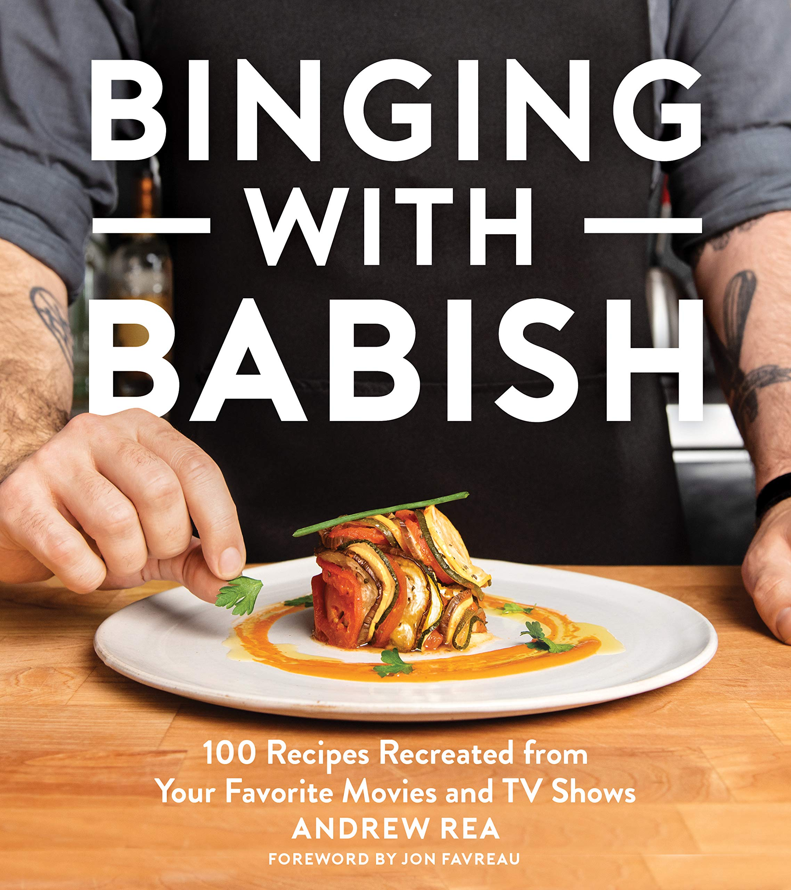
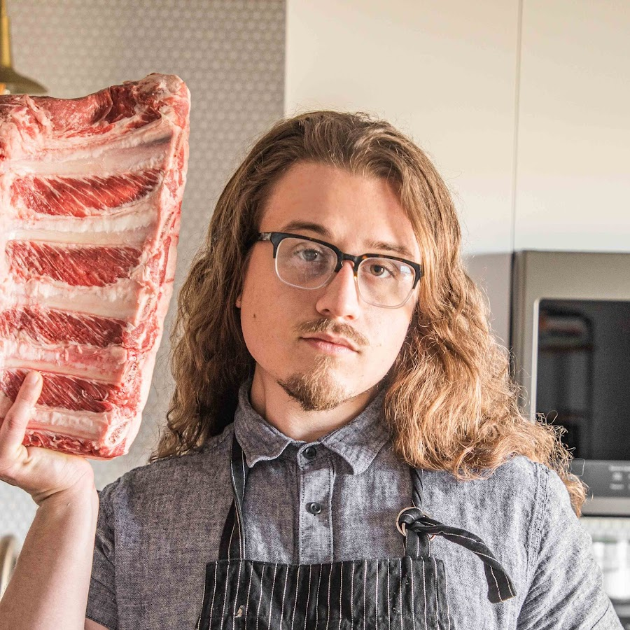

I love these cooking youtubers. I watch them all the time. Its one of my favorite things to watch on youtube. Each of their channels is linked below 0_0
 Binging with Babish, or "Babish Culinary Universe"(he changed it's name) is a cooking channel dedicated (mostly) to recreating dishes seen in popular shows, anime, movies, or really anything. Hes really funny. Hes an amazing guy, and he advocates for open discussion on mental health. He also has a kitten and thats just. The greatest. Heres his channel!
 Joshua Weissman is a comedy/cooking channel. He's hilarious. He's the epitome of a hipster though. My favorite series of his is 'but better' because he takes popular fast food dishes and just makes them better. Thats pretty awesome tbh. Heres his channel!